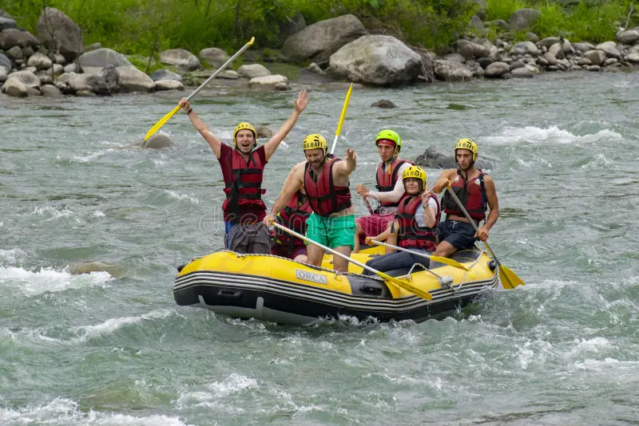

Our mission is to provide the best rafting experiences for adventurers of all levels. Whether you crave heart-pounding rapids or a scenic float, we have got you covered. Safety, fun, and epic memories are our top priorities. Grab a paddle and let’s hit the water!
History
Our company was founded with a passion for adventure and a love for the great outdoors. We live for the rush of whitewater, the thrill of paddling through rapids, and the unbeatable feeling of conquering the river with a team of fellow adventurers. From sunrise launches to sunset campfires, we are all about making unforgettable memories on the water. Our guides are not just experts—they are storytellers, cheerleaders, and your personal hype crew, making every trip feel like a wild ride with friends. Whether you are a first-time paddler or a seasoned river rat, we cannot wait to share our love of rafting with you and welcome you to the family! Let us get out there and make some waves!